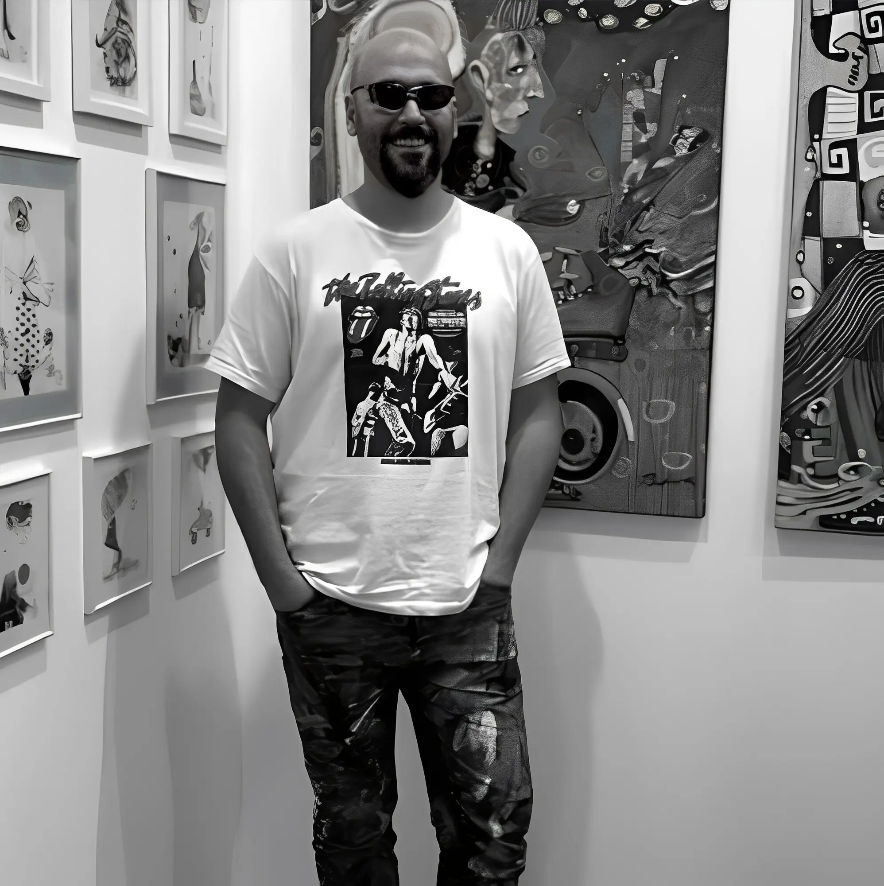
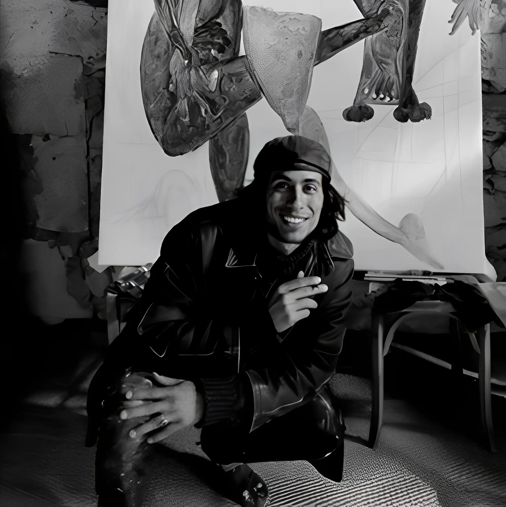

Nuestros Artistas
Max Pedreira
(Buenos Aires, Argentina, 1978)
Max, artista autodidacta, ha acaparado la atención del público por más de 30 años. Sus obras han formado parte de exhibiciones en ciudades como Frankfurt, Nueva York, Seul, Berlin, Mexico City, Madrid, Barcelona y Buenos Aires, entre otras.
Este artista se ubica en la puerta de un mundo de ensueño que parece estar suspendido en tiempo y espacio. Los habitantes de sus piezas son figuras circenses, híbridos de humanos y animales y otros personajes misteriosos con rostros que sentimos hemos visto alguna vez, pero no podemos identificar del todo, como nos sucede cuando despertamos de un sueño profundo. Con elementos que en ocasiones nos remiten a imágenes propias de la ciencia ficción y el steampunk, el trabajo de Pedreira construye una cautivante dimensión onírica con reglas propias. La fantasía cobra vida a través de un caleidoscopio de texturas y técnicas que expande las posibilidades de nuestra propia existencia. El artista nos invita a cruzar el umbral y a entrar en su excéntrico universo.
Max Pedreira ocupará con seguridad un lugar en la historia del arte del siglo XXI.
Akejandro Señero
(Rosario, Argentina, 1993)
Alejandro Señero nació en la ciudad de Rosario, Argentina, en el año 1993.
Dueño de una mente curiosa, Señero se embarca en una travesía estética que lo lleva a abrazar la totalidad del arte sin descartar nada. Su inspiración se alimenta de una multiplicidad de movimientos y estilos con origen tanto en Europa como en el continente americano.
Los trabajos del artista están habitados por personajes que escapan todo reduccionismo fusionando proporciones reales e irreales. El artífice logra eludir la rigidez de todas las clasificaciones posibles derritiendo los muros de las convenciones y permitiendo así que su arte flote libremente en el lienzo. En una simbiosis perfecta entre su propia vida y sus experiencias artísticas, el mundo que Alejandro Señero crea tiene vida y late como un corazón humano.
